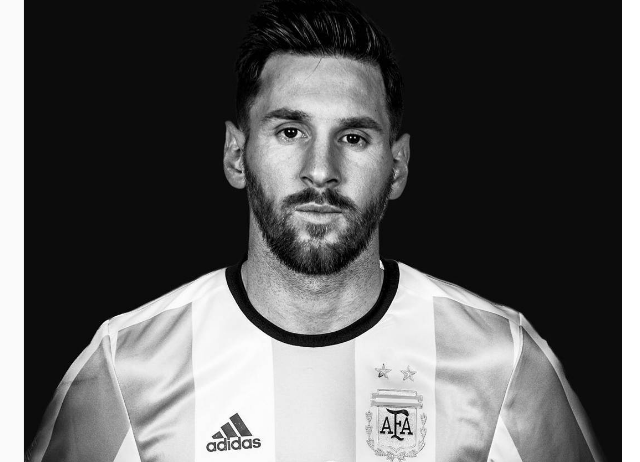

Luis Lionel Andres (“Leo”) Messi (b. June 24, 1987) is an Argentinian soccer player who plays forward for the FC Barcelona club and the Argentine national team. At the age of 13, Messi moved from Argentina to Spain after FC Barcelona agreed to pay for his medical treatments. There he earned renown as one of the greatest players in history, helping his club win more than two dozen league titles and tournaments. In 2012, he set a record for most goals in a calendar year, and in 2016, he was named Europe's Ballon d'Or winner for the fifth time.
In the 2004–05 season Messi, then 17, became the youngest official player and goal scorer in the Spanish La Liga (the country’s highest division of football). Though only 5 feet 7 inches (1.7 metres) tall and weighing 148 pounds (67 kg), he was strong, well-balanced, and versatile on the field.
Messi’s play continued to rapidly improve over the years, and by 2008 he was one of the most dominant players in the world, finishing second to Manchester United’s Cristiano Ronaldo in the voting for the 2008 FIFA World Player of the Year.
During the 2009–10 season Messi scored 34 goals in domestic games as Barcelona repeated as La Liga champions. He earned the Golden Shoe award as Europe’s leading scorer, and he was named the 2010 world player of the year (the award was renamed the FIFA Ballon d’Or that year).